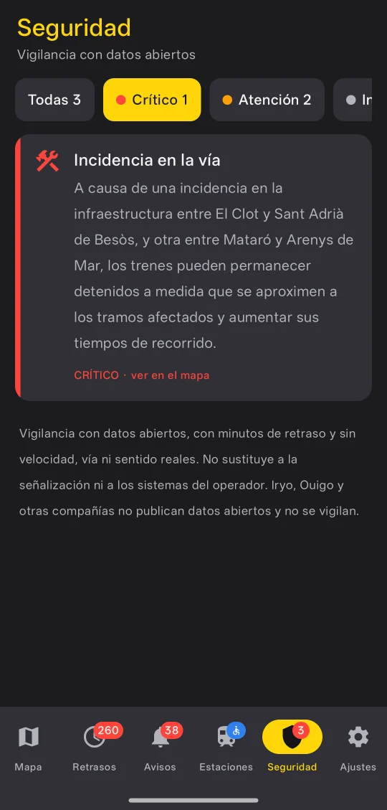

Seguridad
Alertas de seguridad
Andén vigila, con datos abiertos, las situaciones que más importan y las clasifica en tres niveles: información, atención y crítico.
- Tren detenido en vía abierta, fuera de estación, durante varios minutos.
- Tren que se acerca por detrás a otro detenido en el mismo corredor.
- Avisos oficiales de accidente, fallo de señalización, incidencia en la vía o falta de energía.
- Acumulación de trenes muy retrasados en una línea (posible bloqueo).
Cuando hay una alerta crítica, el tramo afectado se ilumina en rojo neón en el mapa y, en la app, llega una notificación al móvil que te lleva directamente a ese punto. Para evitar falsas alarmas, el nivel crítico exige corroboración.
Límites: las posiciones llegan con unos minutos de retraso y sin velocidad real. Iryo y Ouigo no publican datos abiertos, así que no se vigilan.
